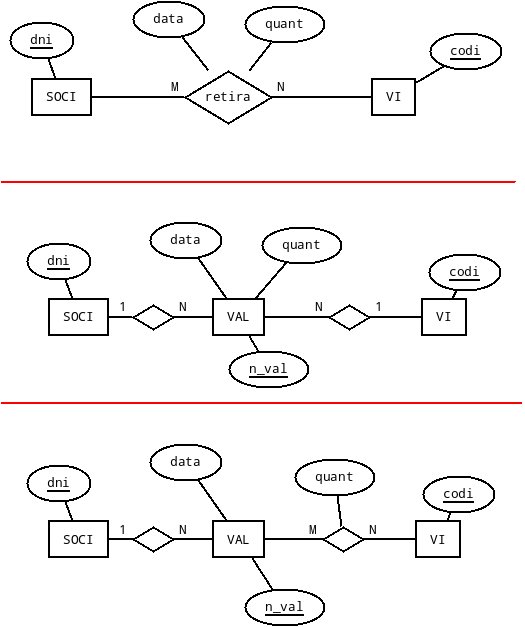
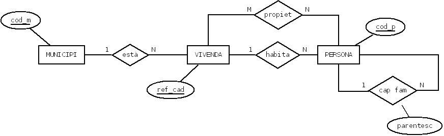
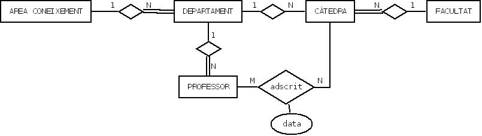

6. Exercicis
Exercici 1
Realitzar l'esquema relacional corresponent a l'exercici 1 del Tema 2.
Recordeu que teníem 3 opcions:

Exercici 2
Realitzar l'esquema relacional corresponent a l'exercici 2 del Tema 2.

Exercici 3
Realitzar l'esquema relacional corresponent a l'exercici 3 del Tema 2.

Exercici 4
Realitzar l'esquema relacional corresponent a l'exercici 4 del Tema 2. Recordeu que el rombe amb doble ratlla significa dependència en identificació;
Exercici 5
Realitzar l'esquema relacional corresponent a l'exercici 5 del Tema 2.
Exercici 6
Realitzar l'esquema relacional corresponent a l'exercici 6 del Tema 2.
Exercici 7
Realitzar l'esquema relacional corresponent a l'exercici 7 del Tema 2.
En la de dalt considerem únicament els viatges (i no els trajectes). A més, només marquem estació d'origen i de destí d'un viatge.
En la segona incorporem els trajectes, i a més marquem totes les estacions on es para en un trajecte.
Exercici 8
- L'empresa té unes quantes xarxes, interconnectades algunes d'elles.
- La major part dels ordinadors estan connectats en xarxa, encara que uns altres no ho estan. També existeixen ordinadors que estan connectats a més de una xarxa (són ponts).
- Cada ordinador pot ser utilitzat por un o més d'un empleat. Un empleat pot tenir permís per a utilitzar un o més d'un ordinador.
- Una xarxa (o segment) és responsabilitat d'un únic empleat que la gestiona. Aquest empleat pot tenir sota la seua responsabilitat més d'una xarxa.
- Cada ordinador pot tenir connectada com a màxim una impressora. No es contemplen les impressores de xarxa. Sempre estaran connectades pel port paral·lel a un ordinador.
- Les aplicacions de l'empresa estan emmagatzemades en els ordinadors i no estan duplicades (una aplicació està en un únic ordinador). Els empleats que tenen accés a aquest ordinador tindran, per tant, accés també a les aplicacions que l'ordinador conté. A més tindran accés a unes altres aplicacions a través de la xarxa. Cada aplicació té assignats permisos per als usuaris que poden accedir a través de la xarxa.
Es vol que el sistema
d'informació siga capaç de respondre a consultes com:
Per a una xarxa:
- Empleat responsable de la mateixa.
- Ordinadors que la componen.
- Impressores en la xarxa.
- Aplicacions dins de la xarxa.
Per a un ordinador:
- Xarxes a les quals està connectat.
- Impressora connectada (si en té).
- Aplicacions que conté.
- Empleats que poden utilitzar-lo.
- Saber si és pont o no.
- Ordinadors que pot utilitzar.
- Aplicacions a les quals té accés.
Per a una aplicació:
- Per motius de seguretat es vol conèixer, per cada accés a ella, l'empleat que va accedir, la data i l'ordinador des del qual es va accedir.
- En quin ordinador està guardada.
- Empleats que poden accedir.
Exercici 9
La zona geogràfica d'influència de l'empresa està dividida en sectors no solapats que comprenen unes quantes ciutats. Un viatjant té assignats alguns d'aquestos sectors. Açò no significa que tinga assignats els sectors en exclusivitat; més d'un viatjant pot tenir assignat el mateix sector.
A un determinat client li poden oferir productes distints viatjants de l'empresa, però mai el mateix producte.
Un producte pot ser ofert per distints viatjants, però sempre a clients distints. Un viatjant no ofereix tots els productes (només alguns). A un client sempre li ofereix un producte el mateix viatjant.
Un producte és ofert per un viatjant a clients distints a preus distints.
El sistema d'informació ha de ser capaç de respondre a consultes com:
- Quins clients hi ha en un sector.
- Quins clients hi ha en una ciutat.
- Quins productes son oferts a un client i a quin preu.
- Quins clients té assignat cada viatjant.
- Quins productes s'ofereixen en un determinat sector.
- Quines ciutats té assignades un viatjant (per estar dins dels seus sectors).
- Quines ciutats realment visita un viatjant (per tenir en elles clients als quals els ofereix algun producte).
Exercici 10
Fer l'esquema E/R i posteriorment passar-lo a relacional corresponent a un Parc Zoològic que vol guardar informació de les espècies que té, els empleats (cuidadors i guies), i els distints itineraris de visita que ofrereix. La informació està estructurada de la següent manera:
-
Especies: de les espècies ens interessa saber el nom, el nom científic i una descripció general. S'ha de tenir en compte que una espècie pot viure en diferents hàbitats naturals i que un hàbitat pot ser ocupat per diferents espècies. Per una altra banda, les espècies estan en distintes zones del parc de manera que cada espècie està en una zona i en una zona hi ha unes quantes espècies.
-
Hàbitats: els diferents hàbitats naturals venen definits pel nom, el clima i el tipus de vegetació predominants.
-
Zones: les zones del parc en les quals estan les distintes espècies venen definides pel nom i l'extensió que ocupen.
-
Itineraris: els itineraris discorren per distintes zones del parc. La informació d'interès per als itineraris és: códi d'itinerari, durada del recorregut, llargària de l'itinerari, el màxim número de visitants autoritzat i el número de distintes espècies que visita (que han de ser totes les de les zones que recorre). Un itinerari recorre distintes zones del parc i una zona pot ser recorreguda per diferents itineraris.
-
Empleats: de tots els empleats voldrem saber el nom, dni, adreça, telèfon i data que van començar a treballar al zoo. Els empleats poden ser de dos tipus: guies i cuidadors.
-
Guies: Interessa saber quins guies porten cada itinerari, tenint en compte que un guia pot dur uns quants itineraris i que un itinerari pot ser assignat a més d'un guia en diferents hores. Aquestes hores són una dada d'interès.
-
Cuidadors: s'encarreguen de cuidar les diferents espècies. Un cuidador pot encarregar-se d'unes quantes espècies i una espècie pot ser atesa per uns quants cuidadores. Ens interessa la data en la qual un cuidador es fa càrrec d'una espècie.
-
Llicenciat sota la Llicència Creative Commons Reconeixement NoComercial CompartirIgual 3.0